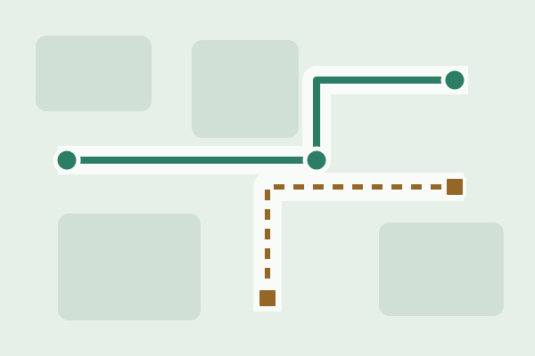
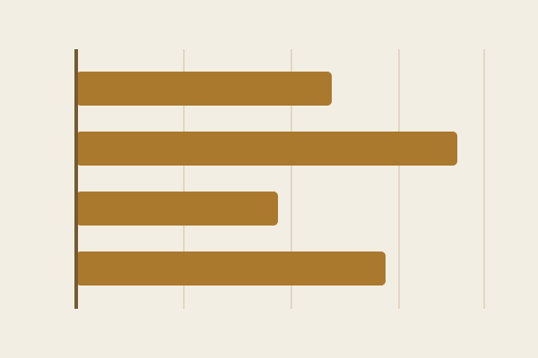

Campus Mobility Dashboard

Compare walking, cycling, and shuttle trips around a fictional campus. A map and travel-time filters could help students plan a route. See the sample resume entry.
Fictional project concepts
Twelve ideas for exploring everyday questions with data.
Fictional concepts for a course exercise, not completed projects. The illustrations are decorative and do not show collected data.

Compare walking, cycling, and shuttle trips around a fictional campus. A map and travel-time filters could help students plan a route. See the sample resume entry.
Explore a fictional reading log by week and genre. Missing entries would stay separate from days with no reading. See the sample resume entry.

Compare fictional study spots by noise, seating, and opening hours. The idea is to help someone find a place that fits a quiet afternoon or a group session.
Use a simulated building log to explore weekday and weekend energy use. Compare patterns while keeping units and measurement periods consistent.
Compare the cost of the same fictional grocery basket across stores. Matching package sizes would help separate price differences from differences in quantity.
Sketch several routes between fictional campus landmarks. Let readers compare distance, stairs, and shaded sections before choosing a walk.
Explore a made-up listening history by day and genre. A weekly view could show when listening happens without treating longer listening time as better.
Use simulated observations to compare lunch queues. Show the range of waiting times alongside a typical wait so that variation stays visible.
Arrange fictional parks, libraries, and museums on a simple map. Filters for travel time and cost could help someone plan a short trip.
Display a fictional diary of sleep and study hours. Compare patterns across days while making clear that a pattern alone does not establish a cause.
Compare made-up weekly time estimates for reading, practice, and projects. Keep the same scale across courses so readers can judge the differences directly.
Map fictional bike racks and sample availability reports. Show when each report was recorded so an old observation is not mistaken for current availability.